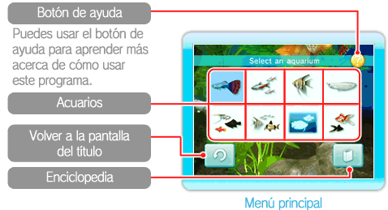
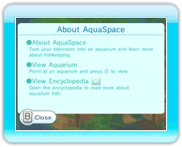
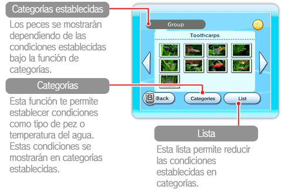
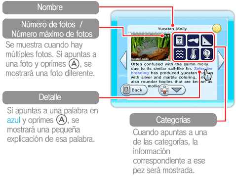

Oprime cuando empieces el programa para que se muestre el menú principal. Una vez en el menú, podrás seleccionar un acuario o consultar la enciclopedia.

Cómo usar el botón de ayuda

Puedes usar el botón de ayuda para revisar los controles y aprender más acerca del uso de este programa. Para usar el botón de ayuda apunta hacia el símbolo que está en la esquina superior derecha de la pantalla y después oprime .
● Mirar un acuario
Para mirar un acuario, elige entre uno de los ocho acuarios disponibles en el menú principal. Cuando apuntes a un acuario, aparecerá una descripción de su contenido. Si apuntas a un acuario y oprimes te dirigirás al acuario que elegiste. (Ver pág. 9)
● Consultar la enciclopedia
Para consultar la enciclopedia, elígela en el menú principal. En la enciclopedia podrás elegir entre diferentes tipos de peces. Si oprimes mientras apuntas a una de las fotos de los peces podrás leer la descripción de este pez. Si apuntas a y después oprimes , o podrás cambiar de página.

・Descripciones

Para mejor entendimiento de cada categoría por favor consulta la siguiente tabla.